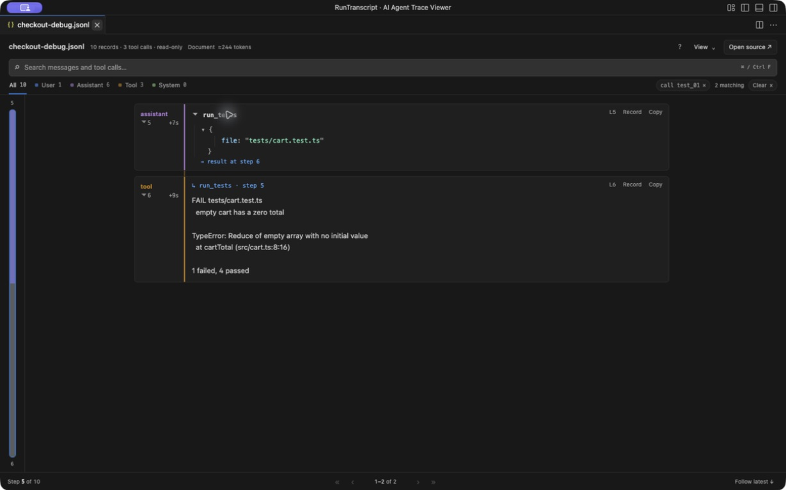
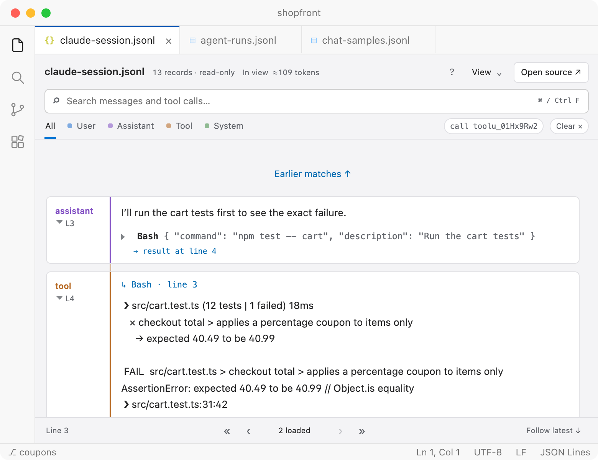
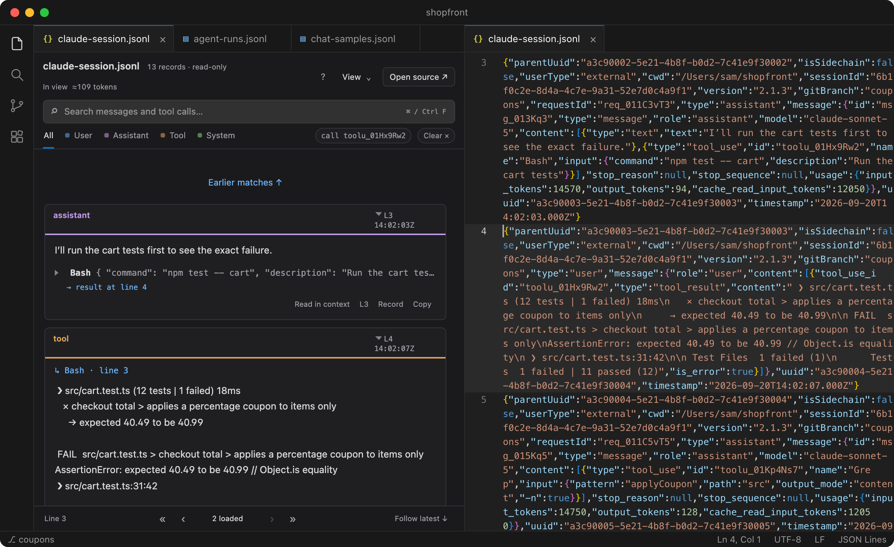
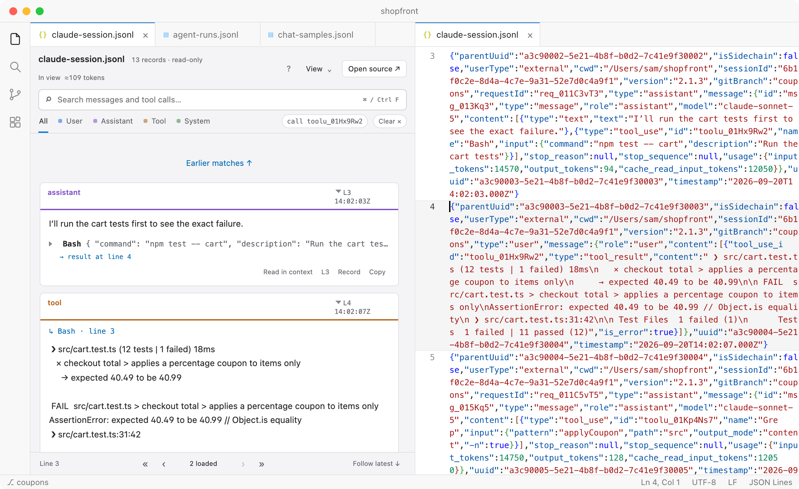
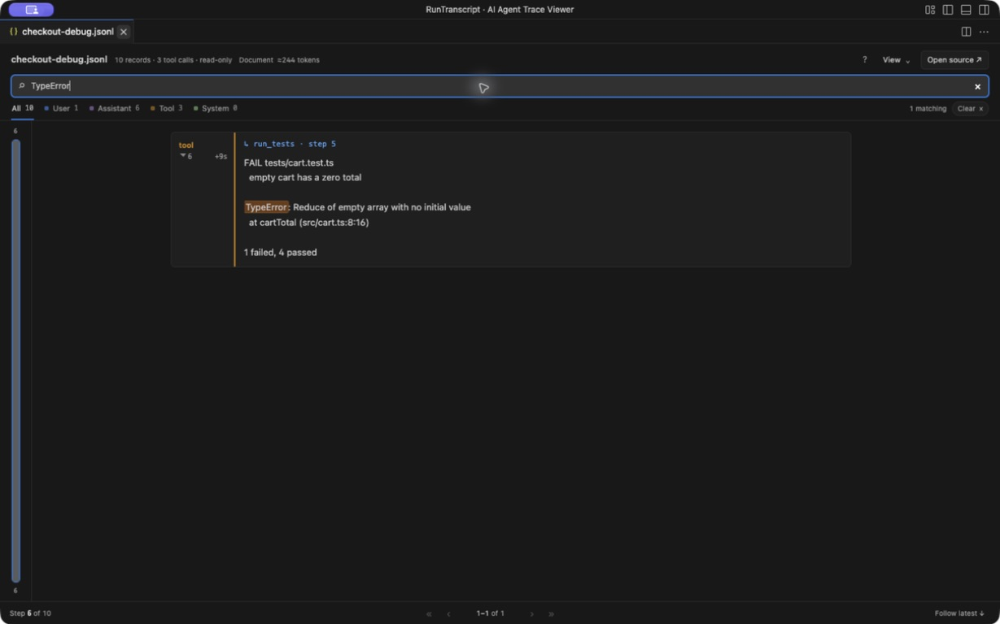
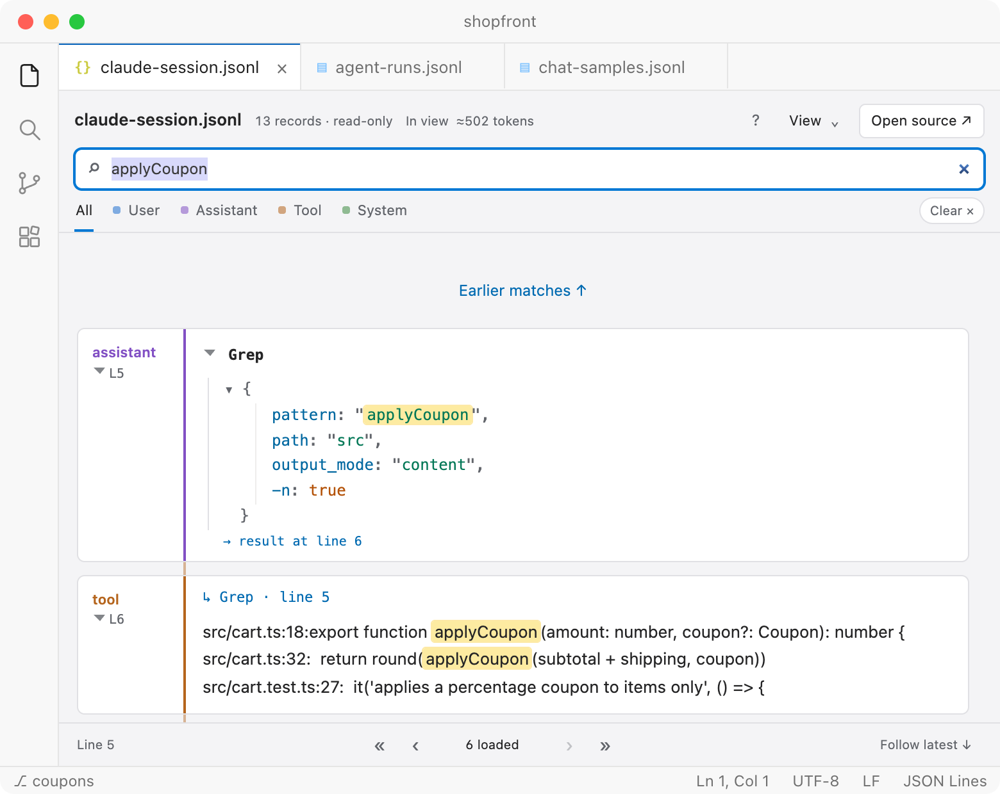
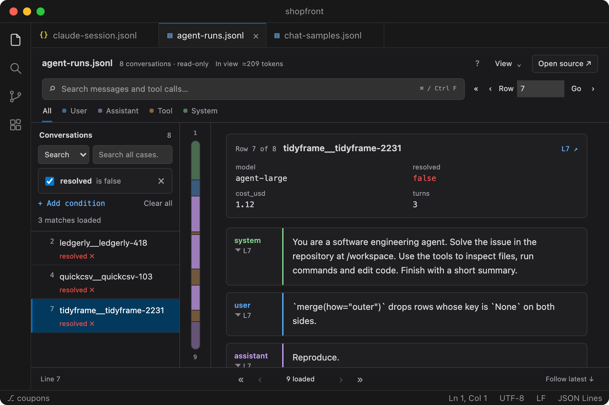
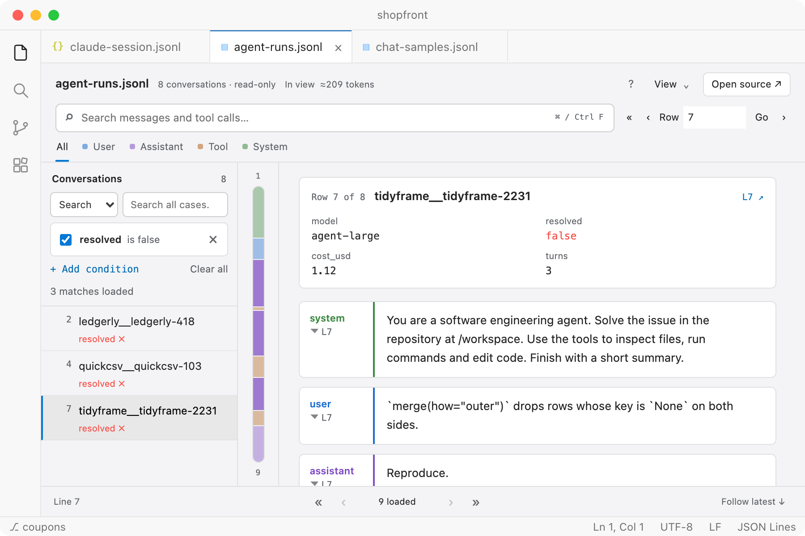

My agent wrote a 110 MB log overnight and the eval says it failed. Can I actually read what it did?
reasoning28 words
They don’t need another wall of escaped JSON. Show every step in order, tie each tool call to its result, and keep the raw record one keypress away.
Read agent traces
like a conversation.
Unroll is a free VS Code extension. Open a Claude Code session, a Codex log or a trajectory dataset from Hugging Face and see every message, tool call and result in order. Check any step against the raw JSON. Reading never sends your data anywhere.
Install for VS Code
Try it on this page
Unroll runs in desktop VS Code. Send yourself the link and install it there.
Free and MIT licensed · VS Code 1.96+ · Windows, macOS, Linux · works offline
Unroll
{ "file": "claude-session.jsonl" }
→ result at line 3
↳ Unroll · line 2
An example Claude Code session: 13 lines of JSONL, exactly as the agent wrote them. Press play or drag the handle to unroll it, then select any message to see the line it came from. The tabs have datasets, other formats and a 50,000-line stress test.
Drop a .jsonl fileIt’s read in this tab. Nothing is uploaded.
Drop a .jsonl or .json file anywhere on this box. It is parsed in this tab and never uploaded.
That was 13 lines. Yours will have thousands, and Unroll still shows the first ones in under a second, because it only reads what you scroll to. Here’s what you get once a trace is unrolled. First, every call is tied to its result.
Follow
{ "call": "toolu_01Hx9Rw2" }
→ result at line 5
↳ Follow · line 4
Follow each call to its result
Arguments appear as readable fields, not escaped JSON strings. Select result at line 4 to see a call next to everything it returned, even when the result arrived many steps later.




Don’t trust the formatting? You shouldn’t have to. Press R on any message on this page to see its record.
Record
{ "line": 4 }
→ result at line 7
↳ Record · line 6
Check it against the raw data
The formatting never hides anything. Switch any message to the exact JSON record it came from, or open its line in the file beside the preview. Records Unroll doesn’t recognize stay available as raw events.




Then find the one step that matters. The search box above works on this page too; press /.
Grep
{ "pattern": "applyCoupon" }
→ result at line 9
↳ Grep · line 8
Find the step that matters
Search messages, tool names, arguments and outputs, and filter by role. Matches are highlighted inside formatted arguments and results. On a long log, search covers the whole file and you can stop it at any time.




And when one file holds a whole eval, open it as a dataset.
Dataset
{ "file": "agent-runs.jsonl" }
→ result at line 11
↳ Dataset · line 10
Review a whole eval or dataset
When each row is a full run, as in SWE-agent, OpenHands or τ-bench exports, Unroll lists every run with its outcome. Pick the runs worth reading by any field, nested metadata included, see each run’s model, reward or cost at the top, and step through them with ⇧J and ⇧K.




A few smaller things you’ll notice:
Watch a run live
Leave a session open while the agent works. New steps appear as they’re written; press F to follow the latest.
Fast on big logs
In benchmarks on a laptop, a 110 MB log with 110,000 messages shows its first messages in under a second. Unroll reads what you scroll to, not the whole file.
Move by keyboard
J/K between steps, N/P between tool calls, R for the raw record. They work on this page too.
Chat datasets too
Spot-check fine-tuning or preference data: pick a conversation and read its turns with Markdown, tables and code rendered.
Show me the whole thing, start to finish.
One minute, recorded with the extension’s own viewer and made-up example files.
Play
{ "video": "walkthrough.mp4", "duration": "1:00" }
→ result at line 15
↳ Play · line 14
No sound. On-screen notes explain each step, and captions and a text transcript are available.
Supported formats
Open .jsonl, .ndjson or .json files. Unroll recognizes these formats, and still shows anything else as raw JSON events.
- Claude Code, Anthropic
- Message envelopes, text, thinking, tool use and results
- Codex, OpenAI Responses
- Response items, messages, function calls and outputs
- OpenAI Chat Completions
- Role and content messages with tool calls
- Gemini
- Parts, function calls and function responses
- Vercel AI SDK
- Text, reasoning and tool parts
- OpenTelemetry GenAI
- Input and output message attributes on spans
- LangChain, LangGraph
- Human, AI and tool messages, including state dumps
- Chat and trace datasets
- One conversation per row: ShareGPT, SWE-agent, OpenHands, τ-bench and similar
Log formats change between tool versions, so a file may only partly match. If yours doesn’t read well, send a small sanitized sample. Parquet isn’t supported. Format details
OK. How do I install it?
Install
Unroll works with desktop VS Code 1.96 or newer. Install it from the Visual Studio Marketplace; it takes a few seconds.
Install
Open Unroll on the Marketplace and choose , or search for in VS Code’s Extensions view.
Open a trace
Right-click a
.jsonl,.ndjsonor.jsonfile and choose . Your usual text editor stays the default.Offline?
Download
unroll-<version>.vsixfrom the latest GitHub release, then choose in the Extensions view’s menu.
Or from a terminal:
code --install-extension mhermon.unroll
Your traces stay on your machine.
Traces often hold source code, file paths, credentials and unreleased prompts. Unroll reads the file you open and displays it. Nothing leaves your machine unless you turn on investigations, an opt-in experiment that asks a model you choose about a trace. Privacy details
- Reading sends nothing anywhere: no telemetry, account or API key
- Never runs the tool calls recorded in a trace
- Never changes your trace files
- Doesn’t load remote images found in trace content
- Reads traces with no network connection
Done: open your last agent run.
The log you have is already readable. It just needs unrolling.
| Reading a trace | Before | With Unroll |
|---|---|---|
| 110 MB, 110,000 messages | less and patience | first messages in under 1 s |
| Which result belongs to this call? | search for the ID by hand | one click |
| Is the formatting hiding something? | hope not | press R |
If one of your files doesn’t display correctly, a small sanitized sample in an issue is the fastest way to get it supported.